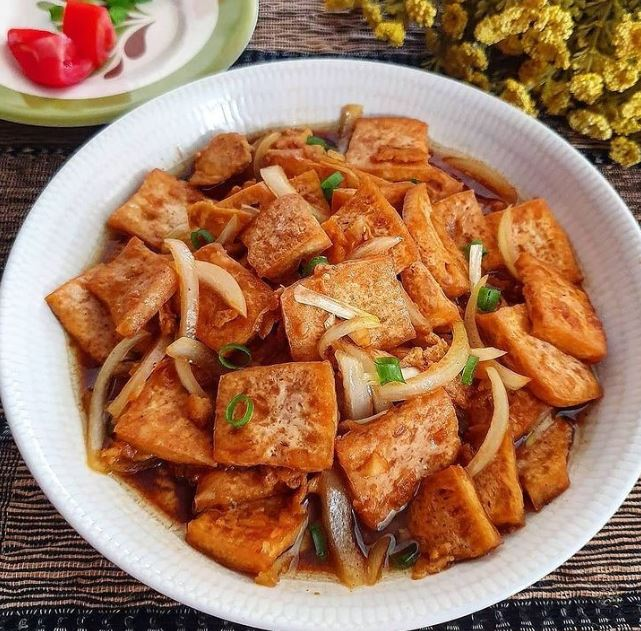

Tumis Tahu Kecap
Bahan-bahan
- 1 bh tahu putih, potong kotak kecil
- 3 bh cabe gendot, iris tipis
- 2 bh cabe merah, iris serong
- 3 bh bawang merah, iris
- 2 siung bawang putih, iris
- 1 lembar daun salam
- 1 tangkai sereh kecil
- 1 cm lengkuas
- 1 sdm saus tiram
- 3 sdm kecap manis
- 1/2 sachet kaldu sapi bubuk
- 1 sdt merica bubuk
- 1 sdm gula merah
- Secukupnya garam
Cara Membuat
- Goreng tahu hingga kering.
-
Tumis bumbu hingga harum, masukkan tahu. Tambahkan bumbu-bumbu.
Masak hingga bumbu tercampur rata.